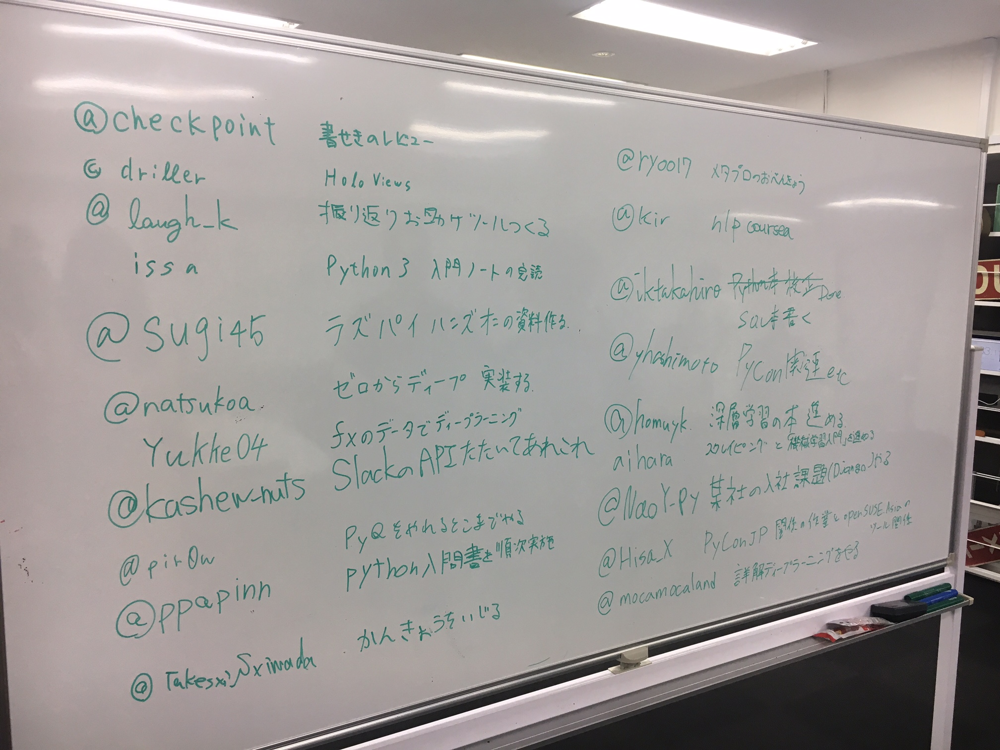

Pythonもくもく会に参加した #mokupy
ライフワークのクライミングで怪我をして以来、各種のもくもく会にいくようになっています。
当日やったことはこんな感じ。執筆多いな―。

経緯
当日は「Slackであれこれ」ということで集計スクリプトを作ってました。なんでかというと、
- プロジェクトで出勤退勤をSlackにつぶいてる。
- 勤怠情報はGoogleスプレットシートにまとめる必要がある。
- Slackでもつぶいて、Googleスプレットシートにも書くのダルい。
- Slackでつぶいた出勤、退勤の時間を1月ごとにファイル出力できるようにしたい。 (そうすれば後はファイル編集も楽でいいよね)
ということでこれを期にPythonで作ろうとしたのですが、既にGolangで実装されてるバックアップツールはあったorz
ただ自分は特定の部屋につぶやいている、特定の投稿を習得したいだけだったので自分用に作りました。
もう一つ欲しい機能があって、取得した勤怠データを自動でGoogleスプレットシートに記載するようにしたらもっと楽かなと思ったのですが、転記する前には目で確認したかったのでやめときました。
既にそうゆうものがあったのですが、認証が通らず動かなかったりしたので、自分で使うやつでそう言うリスクを減らしたいというものあった。 Slack のログを自動で Google Spreadsheet に保存する
使い方
Slackのライブラリは os/slacker を使用。(作成したソースはプライベートリポジトリにしてます。)
Legacy tokens | Slack で自分が操作したいTeamのTokenを作成し、それを環境変数に渡してCLIで叩く感じです。
勘所・制限とか
- 一度に取得できるメッセージのmaxは1000(defaultで100)。→なので一度に一ヶ月分のデータを取りたかったが、1日分ずつ習得。
- 取得した結果より多くのメッセージがある場合、まだ「データあるよー」という値と、取得できたところまでのUnix timestampが帰ってくるらしいので、より無駄のないメッセージの習得をしたい。
- 時間の指定がUnix timestamp。→最初なんの数字かわからず混乱。お陰で日付・時刻操作用のPythonライブラリの学習になった。
雑談的な
お昼とか、合間に話したようなことをメモ。
- PyQ っていういいPython向け学習サイトがあるらしいよ！
- PyQやってるって人と、興味ある人がいたのでPyQ話してきた。
- PCが壊れるときは突然だからバックアップとリカバリープランは作っとこう。
- 3年間使ってたMacBookが再起不能になった話を聞いた。(結構フル稼働してた上にHDDだったらしい。けどSSDでもそうゆう可能性はあるよね)
- ヨドバシやAppleStore行っても店頭で手に入るのはメモリ8GBがMax。臨時対応で15万はつらい。←つらい…
- 「TimeMaschineがあったら過去に戻りたい」←たしかに。
- .config, .ssh_config , 秘密鍵とか管理を忘れがち。あとクラウドに置いてるつもりで、データが大きくて放置していたやつとか。←数年前のやつとか取り返せない…
- あと最近ちょっと触って、ドットなんちゃらができてるのに気づいてなかったり忘れたりしてたやつもありました。(.ansible.cfg, .jupyter, .ipython, あとVM上にあるかもしれないやつとか…)
- 数ファイルならVSCodeやAtomでも良いけど、プロジェクトのファイル触るならPyCharmいいですよ！
- AtomでPython書いてる方で、「デバッグどうしてるんですか？」って聞いたら 「pdbで頑張ってます！」 とのこと。
- 仕事でもPython触れるようならPyCharm使えば、VM連携・リモートデバッグ・VCS連携とか楽ですよと言う話をしてきました。
- 他にはVSCodeがデバッグ機能がついてるし、リモート接続もできるのでいいらしいですね。(まあ僕はVimやPyCharm使ってるんですが…)
Blogのテーマを変更しました
こんな感じになりました。(画像は拡大してご覧ください)

経緯
Blog自体は Sphinx 拡張の Tinkerer で作成しています。
TinkererはBlogテーマが充実してるとは言えないため、デフォルトで同梱されているものをもとにカスタムしたものを使用していました。ところがライブラリのアップデートの影響なのか、いつの間にか各記事にアクセスするとサイドバーの表示が壊れていたので、これを期に flat ベースにBlogテーマを作り直しました。
flatテーマにした理由
他のデフォルトで同梱されてるテーマで確認したところ全滅で、flatテーマだけがちゃんと動いたからです。
ちなみに新規プロジェクトで作り直したら上手くいったので、既存の記事かなにかが悪さをしていたのかもしれません。 ただ追うのがつらそうだったので、諦めて心機一転してテーマを変えることにしました。
カスタマイズした項目
以下の対応をした結果が現在のBlogです。
- タイトルの表示位置を調整した。
- SNSボタンを付け直した。
- navigationに表示する項目を追加した。― Archive, RSSボタン
- google_analyticsを追加する。→もとの設定[htmlファイルのみ]を流用。
- discusを追加する。→ もとの設定[conf.pyのみ]を流用。
- 以下で枠が表示されないのでCSS調整
- contentsディレクティブ
- Tableディレクティブ？ (コロン”:”で単語をくくるやつ)
- 常時SSL接続対応 (後日対応)
- リポジトリのSettings -> GitHub Pages -> Enforce HTTPS のチェックボックスをON
- 混合コンテンツ の解消 (HTTPとHTTPSが混在しているのをHTTPSのみにした)
- JavaScriptのタグエラー解消
プロジェクトのリポジトリをアップデート
Blogを作成している元のリポジトリもちょっとアップデートしました。項目は以下です。
- プロジェクトのリポジトリをGitHubへ移行
- READMEの設置
プロジェクトのリポジトリをGitHubへ移行
記事自体はGitHub Pagesを使用しているのですが、作成元のプロジェクトはBitBucketでの管理のままになっていました。
理由はプライベートリポジトリを使用したかったからですが、現在はGitHubに課金しておりPrivateリポジトリを作成できるので移行しました。BitBucketで管理するの、Blogを書いていない時期にアカウント管理の仕方が変わったりとかで面倒になっていたんですよね…
READMEの設置
まさかと思いましたが書いてませんでした (な、なんだってー！）
これを書いてないせいで新しいPCをセットアップした時どうするか思い出す必要があったり、公開前に確認するとき「なにするんだっけ？」となっていたのでこれを期に。
やっぱりREADME大事。ちなみに README.rst で書いていたらREADMEもビルド対象に含まれてしまったので、READMEだけMarkdownで書いてしまったけど、これはconf.pyの exclude_patterns とかに書いたほうがいいかもしれない。
Pythonもくもく自習室 #1 に参加した #rettypy
Rettyさんがオフィスが移転したということでいってきました。広い！でかい！快適！
Pythonもくもく自習室 #1 @Rettyオフィス - connpass
https://twitter.com/kashew_nuts/status/888580908973932544
やったこと
jupyter-vim-binding 試してた
READMEのInstallationに書いてる方法だと、virtualenvを有効にした環境では動きませんでした。 なので lambdalisue/jupyter-vim-binding Wiki をちゃんと読んで、また試そうと思います。
(追記) 上記Wikiの通りにやったら上手く行きました。せっかく覚えたJupyterのショートカットとは変わるのでまた覚え直す必要がでてきましたが… とはいえやはりVimキーバインドを使えたほうが捗りそうです。
EffectivePython 読み進めた
所感はこんな感じ。
https://twitter.com/kashew_nuts/status/888662892752494592
以下学習メモです。2章関数・6章組み込みモジュールらへんをJupyterNotebookで動かしながらやってました。
- デコレータ
- ラップする関数への呼び出しの前後で追加コードを実行できる。
- これによって、入力の引数や戻り値にアクセスして値を変更できる。
- この機能は、セマンティクス強化、デバッグ、関数登録などを行うのに役立つ。
- @記号は、デコレータをラップする関数を引数として呼び出して、戻り値を同じスコープの元々の名前に代入することと等価
- funtools.wraps
- デコレータは、実行時にある関数が他の関数を修正することを許すPython構文だ。
- デコレータを使うことでデバッガのようなイントロスペクションをするツールに奇妙な振る舞いを引き起こすことがある。
- 問題をおこさないようにデコレータを自分で定義するときは、組み込みモジュールfuntoolsのデコレータwrapsを使う。
- イテレータツール
- アルゴリズムやデータ構造について、Pythonの組み込みモジュールを活用する。
- 複雑な反復処理をする場合は、組み込みモジュールitertoolsを用いてできないか検討する。
- ジェネレータ (generator)
- yield式を使う関数のこと。
- ジェネレータ関数は、呼び出されると実際の作業をせずに、直ちにイテレータを返す。←どうゆうこと？
- ジェネレータを使うと、格納した結果をリストで返すよりも、コードが明確になる。
- ジェネレータが返すイテレータは、ジェネレータ関数の本体でyield式に渡される一連の値を生成する。
- ジェネレータでは、作業メモリにすべての入出力を保持する必要がないので、どのような長さの入力に対しても出力のシーケンスを生成できる。
- イテレータプロトコル
- Pythonのforループや関連する式が、コンテナ型の内容をどのように横断するか示すもの。
- コンテナとイテレータの違いは？
- 位置引数(仮引数、スター引数)
- 関数は、def文で *args を使うことで、可変個引数を受け入れられる。
- すでにリストが会って、可変個引数関数を呼び出すなら、 *演算子 を使って呼び出せる。
- *演算子 をジェネレータと一緒に使うと、プログラムがメモリを使い果たしてクラッシュすることがある。
- デフォルト引数
- デフォルト引数は一度しか評価されない。モジュールロード時の関数定義の時だけである。これは({}や[]のような)動的な値に奇妙な振る舞いをもたらすことがある。
- 動的な値をとるキーワード引数のデフォルト値にNoneを用いる。実際の振る舞いを関数のドキュメンテーション文字列に文書化しておくこと。
- キーワード引数
- キーワード引数は、関数呼び出しの意図をより明確にする。
- キーワード専用引数を用いることで、特に、複数の論理型フラッグを使う場合など紛らわしい関数呼び出しの際に、呼び出し元に、キーワード引数を与えるように矯正できる。
- Python3は、関数にキーワード専用引数の明示的な構文を用意している。
- Python2では、 **kwargs を使い、TypeError例外を引き起こすことで、関数のキーワード専用引数をエミュレートできる。
AzureでJupyter試す
AzureでJupyter Notebookが使えるよとpyhackの合宿で聞いたので、最後の10分くらいでちょっと試してみました。
Azure Machine Learning の Jupyter Notebook 対応 ( 前編 ) が参考になりました。
FAQ を読むと「無料だよ！今後変わるかもしれないけど、無料枠は浸かるようにしたいと考えてるよ！」とのことなので、使ってみると良さそう。GCPにも同じようなのはあるらしい。AWSは…自分で作れってことですね。
お昼とかで話したこと
お肉美味しかったです。(お昼画像撮り忘れた…)
転職活動、Django、設計のお話、釣りやクライミングの話などしてました。
- 「こうゆう勉強会にでてるSier努めの人はたいてい転職を考えてる」という説
- 「やりたいことがあるなら一時の負荷をかけるという選択肢はありだよ」という説
- 「趣味大事」という説
なんかを話していたのが印象的です。
「Djangoを学ぶなら Django Girls Tutorial いいよね」とか、「そろそろ日本語のDjango本とかでないかなー。」とかいう話もしましたね。
成果発表
一人3分で発表。すごい、全員発表してた。
- shinyorkeさん 主催です。 TokyuRuby会議11 の準備してました。
- laughkさん https://github.com/laughk/footprint 作ってました。今日一日こんなことやってたなーというコメントを取れるようになるやつ。
- Noriyukiさん Djangoのチュートリアルのメンテナンスしてました。が、いまSphinxのビルドが通らない。
- iktakahiroさん slideshipというものを作ってます。今日はScrapyを作ってページ一覧用を取得するものを作ってました。 PyData.Tokyo Meetup #14 - NVIDIA GPU と ディープラーニング - connpass やります。今回は枠がいっぱいなので興味あるかは次回是非。
- 合原さん be, inc.で働いてます。機械学習の勉強してました。今日はグルーピングについて。
- kashew_nuts(自分) 上記やったこと参照。あとこのBlog書いてました。
- fou4さん PocketのAPI叩いてpandasで色々編集してた。
- ヒラタさん 強化学習してました。DQNの写経。
- ???さん 新卒で広告代理店で営業職してます。プログラミングできるようになれ！と上司にいわれ、いろいろ調べてPythonやろうと思ってやりはじめた。今日は午前中OpenCV, 15:00ぐらいからスクレイピングをやってた。
- たさいさん 2年目でAWSのインフラエンジニアしてます。 Pythonではじめるデータラングリング 試したり、PythonでEC2を操作する自作コマンドを作ってました。
- miさん 某新聞社で働いてます。漫画サイトのスクレイピングしようと思ったらJSONがすでにあったので、ElasticSearchやってました。
- kd8さん ガンダムが好きです。GPUの本をサラサラ読んで、AWSで試そうかなーと思ったら申請が必要だったらしい。
- 大平@mohira 3ヶ月ぐらい前からエンジニアをやってます。
- パターン認識と機械学習 上 読んでます。 下巻 の方が分厚くて高い…
- 3層ニューラルネットワークのフルスクラッチ実装してました。
- NaoYさん 某社の入社課題でDjangoやってました。あと1週間くらいでなんとかしたい。
雑感
勉強会にいくことでクライミングするのを抑えるライフハックをしてるけど良さそう。(限度はあるかも)
広々とした空間だったので、席を移動しながら作業進められたりして便利だった。
会場のワンオペは大変そうだなと思いました。広さ的にはもっと人数多くても行けそうだったけど、複数人いないとあのぐらいが限界かも。
(追記) その後聞いたところ、人数的には主催が2人以上いても今日の人数(20人)以上にはしないつもりだそう。成果発表の時間や会場片付けのオペレーション上限界ギリの人数とのこと。確かにあのぐらいの人数が成果発表とかを考えるとちょうど良さそうですね。
次回も楽しみにしています。